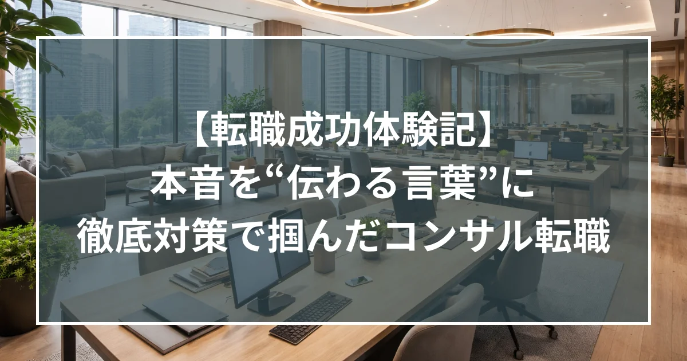

【体験記】本音を“伝わる言葉”に 徹底対策で掴んだコンサル転職

ステラキャリアズとの出会い
入社数年が経過し、今後のキャリアアップとライフステージの変化を見据え、本格的に転職活動をスタートさせました。当初は「いずれは」と考えていたものの、将来的なライフプランを考慮し、今のうちに理想の環境を整えておきたいという思いが強くなったのがきっかけです。
数あるエージェントの中で村木さんにお願いしようと決めたのは、初回面談での専門性に触れたからです。ご自身のバックグラウンドを含め、コンサル業界の転職市場に精通されていること、そして何よりアドバイスが極めてロジカルであることに信頼を置き、この方となら納得のいく転職ができると感じました。
本番を想定した、質の高い面接対策
今回の転職活動で最も助けられたのは、回数を重ねた徹底的な面接練習です。通常の質疑応答だけでなく、コンサル特有のケース面接対策についても、私が「答えづらい」と感じる部分まで鋭く深掘りをしていただきました。
村木さんとの模擬面接で思考の癖を修正していただいたおかげで、本番の面接でも緊張することなく、落ち着いて受け答えをすることができました。
また、自分の「本音」を面接用の「言葉」に整えてくださったことも大きな勝因です。退職理由や志望動機について、まずは自分の素直な思いを村木さんにぶつけ、それをどう伝えれば企業側にポジティブに響くか、プロの視点で言語化していただきました。結果として、矛盾のない一貫したロジックで選考に臨むことができました。
伴走型のサポート体制
私は以前にも大手のエージェントを利用して転職した経験がありますが、今回村木さんのサポートを受けて感じたのは、一人ひとりの候補者に対する向き合い方の深さです。単なる案件紹介に留まらず、選考のフェーズごとに細やかなフォローをいただけるため、最後まで安心感を持って進めることができました。
最後に
ステラキャリアズを利用するか迷っている方へお伝えしたいのは、ここは「形だけのサポート」ではなく、候補者と同じ目線で課題に向き合ってくれる場所だということです。
自分の弱点を的確に指摘し、納得感のあるキャリア選択を支えてくれるパートナーです。本気で次のステップを考えているのであれば、ぜひ一度村木さんに相談してみることをお勧めします。
Go back to Insight